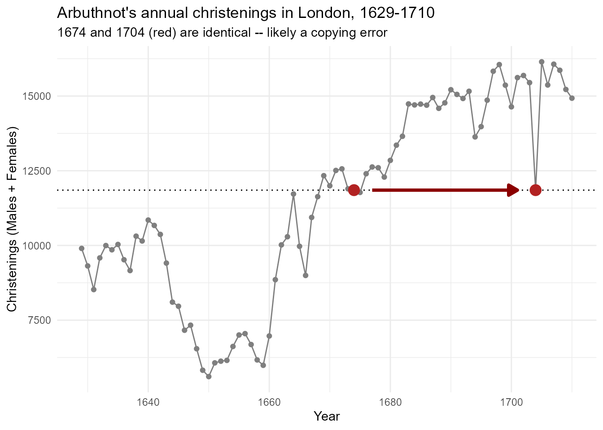
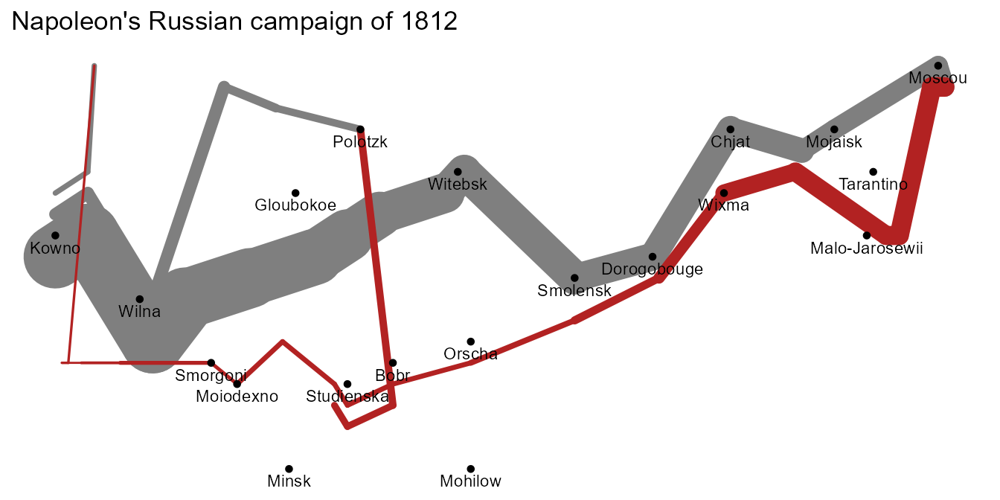
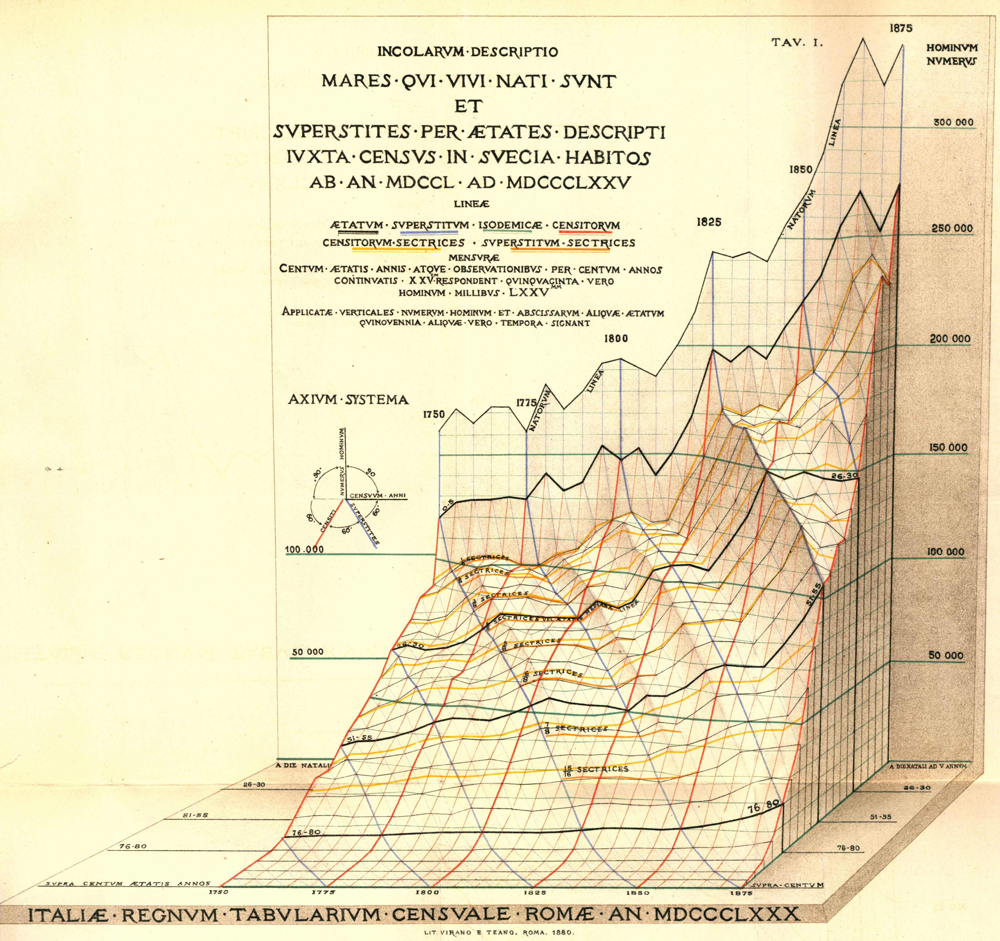
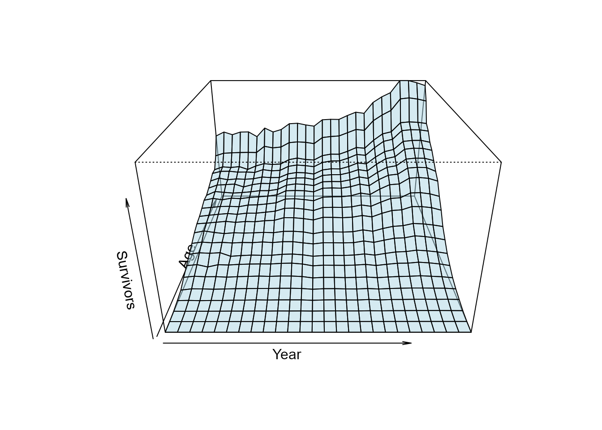
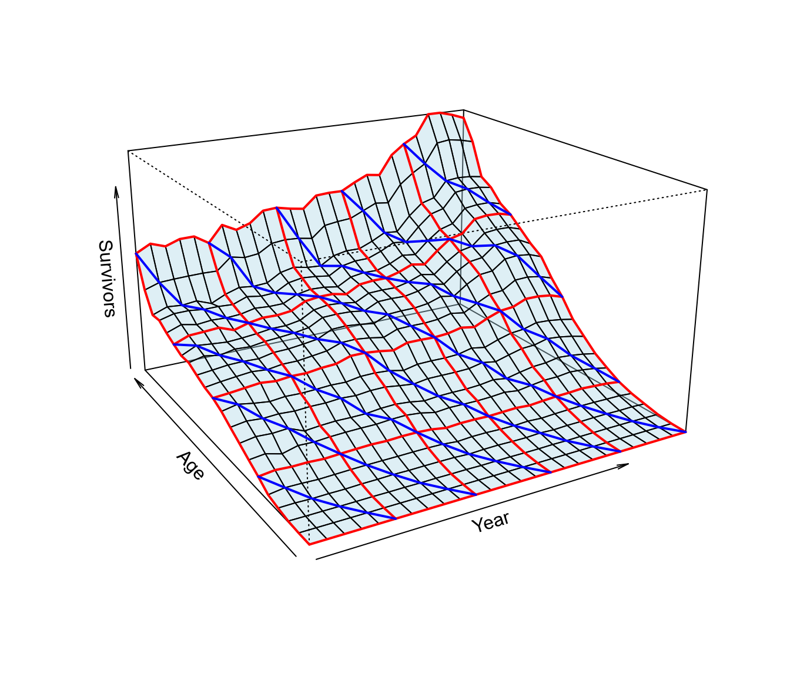
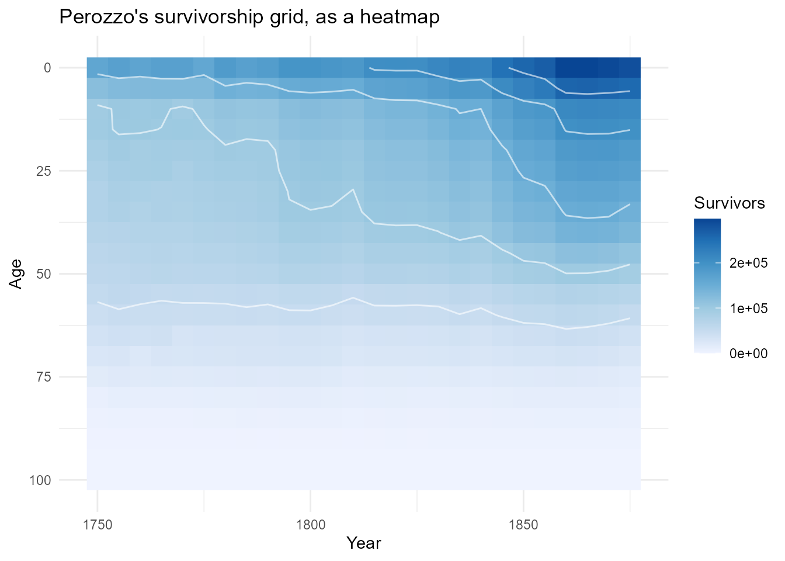
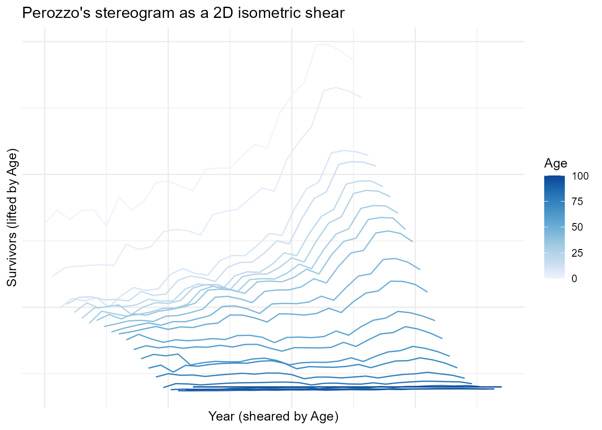
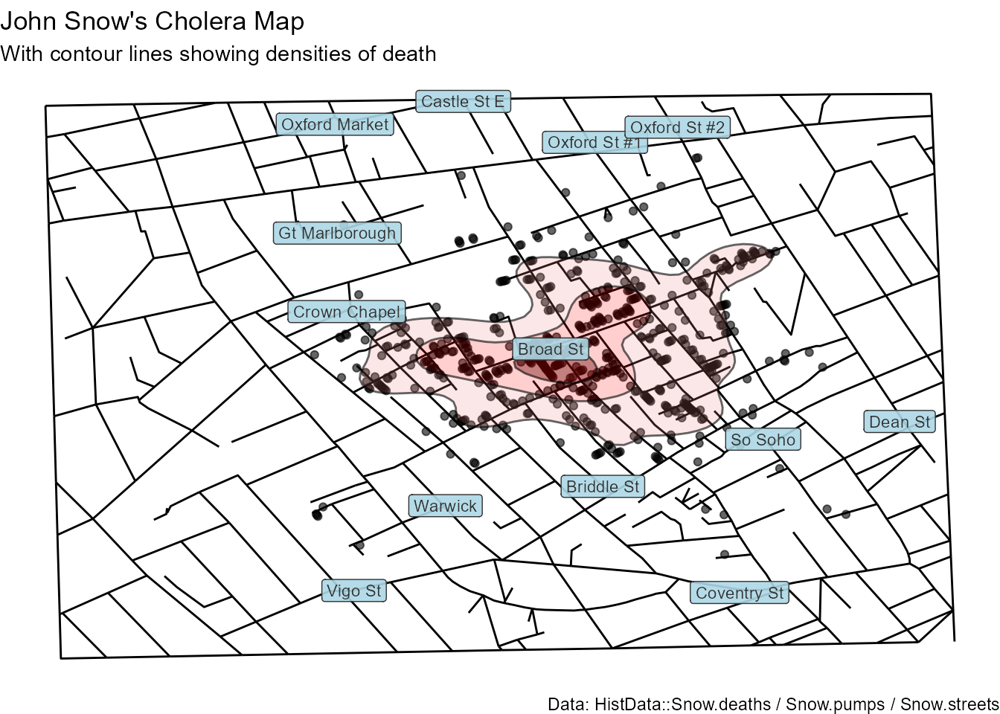

The HistData Challenge: Re-Visioning Historical Graphics
Source:vignettes/HistData-Challenge.Rmd
HistData-Challenge.RmdRE-VISION n. ri-’vizh-en (ca. 1611) 1. To see again, possibly from a new perspective; syn: review, reconsideration, reexamination, retrospection. 2. An act of revising; syn: rewrite, alteration, transformation. (Merriam-Webster, 2002, quoted in Friendly, 2002)
Introduction
The HistData package collects data behind some of the
most important graphics in the history of statistics and data
visualization. Some of these still have stories to tell, and lessons for
historians, graphic designers and software developers.
I consider the package as a concrete, usable contribution to a program of research I call statistical historiography: The use of modern statistical and graphic methods as tools to study problems and questions in the history of statistics and and data visualization. A main goal of this is a better understanding of historical problems in science and data analysis through the process of trying to reproduce a graph or analysis using modern methods.
You are led to ask— and think about— important questions of statistical historiography:
What was he thinking?: How and why Charles Joseph Minard, Luigi Perozzo, John Snow, Michael Florent van Langren and other heroes in data visualization history chose some graphic form to tell their story.
How did he do it?: The contributions of the past were mostly hand-drawn, but with incredible attention to detail: text labels on lines, curves, regions; drawn numbers to show the data; annotations to add sense to scales or convey the message more directly to the viewer.
Why was the resulting graphic considered so beautiful and important?: Each of these datasets and their associated graphics solved, or contributed to, an important problem of their time. But they did so in a way that attracted attention and admiration
I call the process “re-visioning” – meaning to see again, hopefully in a new light. As such, they provide opportunities, and this HistData Challenge to reproduce them in R.
Challenges
This idea first took shape the Minard Challenge that
stemmed from my paper Friendly (2002), “Visions and Re-Visions of
Charles Joseph Minard”. This reviewed decades of attempts – by many
different people, using many different tools – to reproduce and extend
Minard’s famous graphic of Napoleon’s Russian campaign. That paper, and
the gallery of re-visions that grew out of it, is the model for this
vignette: a catalog of kinds of re-vision, applied not just to
Minard but to any dataset in this package, plus a running inventory of
what’s already been attempted (in sandbox/, by outside
contributors, in companion projects) and what’s still open.
I should mention that the idea of a data visualization “Challenge” is an important one in this age of online communication. Typically, they present a dataset, or a content theme, or just an image, and invite participants to participate; sometimes prizes are awarded.
Some examples illustrate the range of possibilities from such endeavors:
ASA Statistical Graphics Expositions: starting in the early 1980s – the well-known 1983 Data Exposition (Donoho & Ramos’s cars/mpg dataset) is often cited as the first, though a 1982 precursor is also mentioned in some accounts – the Section on Statistical Graphics of the American Statistical Association began a series of poster/paper sessions at the Joint Statistical Meetings organized around analysis of a single curated dataset, intended as an opportunity to share perspectives, approaches to the problem, and highlight developments in software. Some notable examples are the
HistData::Pollendata contained here and the baseball salary/performance data from the 1988 Exposition (based on the 1986 season), now shipped in thevcdpackage asvcd::Baseball.-
Hotelling Society: I was teaching a graduate course, Psychology 6140: Multivariate Data Analysis at the time, and I had the idea to use the baseball data again to challenge my students to “strut their stuff” and show off what they had learned in the course in a mock-conference setting I called the “Society for Exploration of Multivariate Data”, or, in honor of Harold Hotelling, the “Hotelling Society”. I used the Baseball dataset for this, with data provided in SAS and SPSS format.
But students were encouraged to extend the scope with other baseball-related datasets or questions. Students dressed the part, a “7th inning stretch” included beer and pizza, and a fictitious guest speaker, Izzy A. Ringer, presented conclusive proof that Shoeless Joe Jackson did NOT throw the 1919 World Series – the Black Sox Scandal, in which Jackson and seven Chicago White Sox teammates were accused of intentionally losing to the Cincinnati Reds. The upshot was that we all had fun with this, and it contributed to understanding of use of methods of the course and conveying results for a conference presentation.
The baseball data itself outlived the course: working with it for the Hotelling Society is what led, eventually, to devloping the
LahmanR package, which packages Sean Lahman’s baseball database directly for R users – itself a small case of one challenge (teach a course, make the data usable) turning into a durable, reusable piece of data for baseball research. This is the same trajectoryHistDataitself follows on a larger scale. Kaggle Competitions: machine-learning contests run on the Kaggle data science platform, from beginner “Getting Started” competitions like Titanic: Machine Learning from Disaster (predict who survived, from passenger data) to prize-money contests sponsored by companies and research groups. Not about historical re-visioning specifically, but the same competitive/participatory spirit – a public dataset, a shared task, and a leaderboard of attempts to compare against.
MakeoverMonday: probably the closest in spirit to this vignette’s own idea of re-visioning. Started in 2016 by Andy Kriebel and Eva Murray, a new dataset – almost always one already published somewhere as a chart, often a mediocre one – is posted every Sunday, and participants are asked “to work with a given data set and create better, more effective visualizations and help us make information more accessible.” Where 30DayChartChallenge and TidyTuesday hand you a bare dataset, MakeoverMonday hands you an existing graphic and asks you to improve on it – the same path this vignette takes with Minard, Perozzo, and Snow, just aimed at recent charts instead of historical ones.
30DayChartChallenge: one chart a day for the month of April, each day keyed to a themed prompt (e.g. “part-to-whole,” “historical,” “3D”). Started in 2021 by Cédric Scherer and Dominic Royé as a follow-on to the #30DayMapChallenge. John Russell’s recreations of several
HistDatadatasets, used throughout this vignette, came from the 2025 edition – see thesandbox/inventory below.TidyTuesday: a weekly data project run by the R4DS (“R for Data Science”) online learning community since 2018 – a new real-world dataset posted every Monday, participants share their own wrangling/visualization of it. Less about re-visioning one specific historical graphic and more about practicing data skills on whatever dataset comes up that week.
#DuBoisChallenge: launched in 2021 by Allen Hillery, Anthony Starks, and Sekou Tyler specifically to recreate W. E. B. Du Bois’s hand-drawn data visualizations from the 1900 Paris Exposition using modern tools. Closest in spirit to this vignette’s own framing of all the challenges above – explicitly about revisiting one historical body of graphic work, not a general prompt-of-the-day format.
A tiny motivating example: Arbuthnot
Before anything as ambitious as tackling Minard or John Snow, a
simple example makes a small point of statistical historiography
concretely. John Arbuthnot’s 1710 table of annual christenings in London
(1629-1710) looks, on a first read, like a straightforward count. But
Sandy Zabell (1976) found that the total number of
christenings (Males + Females) for 1674 and
1704 are identical – not approximately close, identical, down
to the last birth – strongly suggesting one year’s entry was copied from
the other, whether by Arbuthnot himself or a later transcriber.
data(Arbuthnot)
Arbuthnot$Christenings <- Arbuthnot$Males + Arbuthnot$Females
Arbuthnot[Arbuthnot$Year %in% c(1674, 1704),
c("Year", "Males", "Females", "Christenings", "Ratio")]
## Year Males Females Christenings Ratio
## 46 1674 6113 5738 11851 1.065354
## 76 1704 6113 5738 11851 1.065354Males, Females, Christenings,
and the derived Ratio all match exactly; only
Plague and Mortality (not shown) differ. A
table alone makes this easy to miss among 82 rows. Plotting
Christenings by Year makes it much harder to
miss: the series climbs steadily over these 80 years, nearly doubling,
so a value perfectly ordinary for the 1670s becomes a jarring plunge
when it recurs, unchanged, thirty years later. The horizontal line marks
the shared level. And, following Zabell & Wainer’s Figure 2 (2002),
shows it passing through only these two points:
copy_level <- Arbuthnot$Christenings[Arbuthnot$Year == 1704]
ggplot(Arbuthnot, aes(x = Year, y = Christenings)) +
geom_line(color = "grey50") +
geom_point(color = "grey50") +
geom_hline(yintercept = copy_level, linetype = "dotted", color = "black") +
annotate(
"segment", x = 1677, xend = 1701, y = copy_level, yend = copy_level,
color = "darkred", linewidth = 1.3,
arrow = arrow(length = unit(0.3, "cm"), type = "closed")
) +
geom_point(
data = subset(Arbuthnot, Year %in% c(1674, 1704)),
color = "firebrick", size = 4
) +
labs(
title = "Arbuthnot's annual christenings in London, 1629-1710",
subtitle = "1674 and 1704 (red) are identical -- likely a copying error",
y = "Christenings (Males + Females)"
) +
theme_minimal()
Christenings, not the sex Ratio
(Males/Females), is the quantity that makes
the anomaly visible, even though Ratio also matches exactly
between the two years. Since Males and Females
were copied together, their ratio just reproduces 1674’s
perfectly ordinary value – nothing in the Ratio series
flags 1704 as unusual. (The one genuinely striking Ratio
value in this stretch, 1703’s record low of 1.011, is unrelated noise,
no part of this story.) It’s Christenings, because it
climbs steadily across the whole span, that turns a copying error into a
visible outlier – exactly the quantity Zabell & Wainer’s Figure 1
plots (2002).
That’s re-visioning in miniature: looking again at old data, graphically, shows something tabulation alone hides. Zabell & Wainer (2002) state the scale of the anomaly plainly: 1704 has about 4,000 fewer christenings than its neighbors predict, and the correct figure – 15,895 (8,153 boys, 7,742 girls) – sits comfortably between 1703 and 1705, exactly where a corrected value should. Arbuthnot, they argue, would surely have caught and fixed so glaring an error had he ever plotted his own data: graphed, it stands out “literally, like a sore thumb.”
That he apparently never did is itself a historiographic finding, not a personal failing: it’s evidence that graphing data simply wasn’t yet part of a statistician’s toolbox in 1710, before Playfair invented the line graph in his Commercial and Political Atlas (1786). Re-visioning the graph doesn’t just fix a 300-year-old data error; it exposes a working assumption of Arbuthnot’s era that no longer holds today.
See Zabell (1976) for the original discovery and an earlier version of this graph, Zabell & Wainer (2002) for the fuller published account excerpted above, and Wainer & Spence (2005) for a further retelling.
The graph above could be improved to tell a richer historical story – 1704 is far from the only irregularity in it, just the only one without an obvious explanation. Zabell & Wainer’s own Figure 1 (2002) labels several other anomalies directly on the plot:
-
1643-1660:
Christeningsfalls from about 10,400 in 1642 to a low of 5,612 in 1650 – nearly halved – coinciding with the English Civil War (1642-1651) and the execution of Charles I in 1649. Timing alone doesn’t fully explain it, though: the war ended in 1651, yet the series doesn’t climb back past 10,000 until 1662, over a decade into the Interregnum and Restoration. Zabell & Wainer note that Graunt himself offered a more complex account: Anglican ministers, in this politically fraught stretch, likely declined to register children born to Catholics or Protestant dissenters. Civil war explains the drop’s onset better than its decade-long persistence. - 1665-1666: a sharper, shorter dip – from 11,722 in 1664 down to 9,972 in 1665 and 8,997 in 1666, before rebounding to 10,938 in 1667 – lines up with the Great Plague of London (1665, which killed roughly a fifth of the city’s population) immediately followed by the Great Fire of London (September 1666). Unlike the Civil War’s decade of depressed numbers, this one snaps back within a year or two once the immediate crises passed.
Neither needed a Zabell-style detective plot to explain – they’re visible, dateable historical events, which is exactly why Zabell & Wainer’s Figure 1 labels them directly rather than treating them as mysteries. 1704 stood out precisely because it didn’t have an obvious explanation like these – until the plot revealed it wasn’t a historical event at all, just a clerical error.
What is re-visioning?
Historians of statistics have practiced “re-visioning” long before
this vignette put a name to it – going back to an original historical
graphic or dataset itself, not just its published conclusions, to
understand it on its own terms, in its own time. Some examples here
follow the same pattern as Arbuthnot above, at a larger
scale.
Stephen Stigler does this throughout The History of Statistics (1986) and in papers devoted specifically to it: “Francis Galton’s Account of the Invention of Correlation” (1989) re-examines Galton’s own scatter diagram of parent/child heights to work out how Galton actually arrived at correlation, and “Regression Towards the Mean, Historically Considered” (1997) does the same for Galton’s geometric argument for regression – reconstructing the reasoning behind a graphic, not just restating its result.
Stigler has also made the case for why this kind of return-to-the-source work matters, not just demonstrated it. “Data Have a Limited Shelf Life” (2019) traces three textbook-famous datasets – Quetelet’s Scottish soldiers’ chest measurements, von Bortkiewicz’s Prussian horse-kick deaths, and the Cushny-Peebles sleep data behind Gosset’s first published t-test – back to their original sources, and finds each one, after decades of uncritical reuse, had drifted away from the messy, selective, error-ridden reality of its collection into something merely “ornamental”: a fixed textbook prop, its provenance and caveats long forgotten (Gosset’s own data, for instance, reached Fisher’s textbook with two columns mislabeled as the wrong drugs entirely, an error nobody caught for 27 years). Old, dead data aren’t worthless, he’s careful to add – like museum pieces, their value is just a different kind from a live dataset still doing scientific work – but he warns that “big data” is no less susceptible to going “ornamental,” and may be harder to catch: “dead data do not represent the worst case; zombie data may be even worse for scientific use.” Re-visioning, in this vignette’s sense, is exactly the antidote he’s calling for: asking where a dataset actually came from is what keeps it from going ornamental in the first place.
David Bellhouse (with Laura Murray) does something similar for a much earlier and more painstaking case: Murray & Bellhouse (2017) work out how Edmond Halley actually constructed his 1701 map of magnetic declination – a map, not a table – using only the methods and instruments available to Halley at the time.
James Hanley (McGill)
has made a research program out of exactly this kind of
return-to-the-source work, publishing detailed re-analyses and
re-created datasets that go well beyond what the original publications
contained. Two examples tie directly into HistData:
- Hanley, Julien & Moodie (2008), “Student’s z, t, and s: What
if Gosset had R?,” traces the height and finger-length data originally
gathered by Macdonell (1901) and used by “Student” (Gosset, 1908) to
introduce the t-distribution – the same data shipped here as
HistData::Macdonell. - Hanley’s re-enactment of
Gosset’s yeast-cell counting, following the method described in
Gosset’s 1907 Biometrika article, connects directly to
HistData::Yeast– also the subject of John Russell’ssandbox/Yeast.Rrecreation, picked up again in the case studies below.
A taxonomy of re-visions
The gallery accompanying Friendly (2002), https://www.datavis.ca/gallery/re-minard.php, catalogs about 15 different re-visions of the Minard graphic. This can be read as a checklist rather than a one-off catalog, they sort into six recognizable kinds of re-vision – a rubric that applies to any HistData dataset, not just Minard’s.
1. Software/language ports
The same graphic, redrawn in a different tool: Mathematica, a formal Grammar-of-Graphics specification, ggplot2, SAS/IML, Protovis. The content doesn’t change; what changes is what the choice of tool reveals about the graphic’s underlying structure – a grammar-of-graphics port, for instance, forces you to name the mapping from data to visual channel explicitly, in a way the original hand-drawn version never had to.
A software port is only as easy as the data behind it lets it be, and
HistData deliberately pre-parses some of its more complex
graphics into separate, composable pieces rather than one monolithic
table – the same decomposition the original artist implicitly made when
laying out the figure. Snow’s cholera map is really five aligned layers
(Snow.deaths, Snow.pumps,
Snow.streets, Snow.polygons,
Snow.dates), and Minard’s march is three
(Minard.cities, Minard.troops,
Minard.temp: places, the flow band itself, and the
temperature graph beneath it). Porting the graphic to a new tool becomes
a matter of re-mapping each existing piece onto that tool’s own
layer/channel model, rather than re-deriving the decomposition from
scratch – see the Minard case study below, built directly
from these three data frames.
2. Design variations
Same content, same tool family, different design decisions: legibility fixes, a graphic designer’s redraw, an alternate visual metaphor (Minard’s gallery includes a pictograph version emphasizing human cost over cartographic accuracy). This is the category where taste and communication goals do the most work.
3. Interactive/web-based
Tooltips, drill-down, linked views, map overlays – re-visions that
trade the fixed, printed page for something a reader can query. The
Minard gallery includes an image map with linked text and a drill-down
SAS GMAP; this is also the natural home for the plotly
version of Perozzo below.
4. Temporal/animated
A step-by-step reveal, a third axis given over to time, a narrated
video. Minard’s original already compresses time into distance along the
march route; an animated re-vision instead lets time play out,
trading the compression for a different kind of legibility. (See “Open
invitations” below for the deferred gganimate idea for
Perozzo.)
A concrete example: Ron Kennett’s “moving bubble” animated re-vision,
which replaces Minard’s static flow band with a single traveling bubble
sized to the army’s current strength, sweeping along the march route as
time advances. (Image on file,
Kennet-moving-bubble.gif; embedding pending the general
image-hosting/licensing decision noted above.)
5. Alternative representations
A genuinely different chart type for the same underlying data – not a
redraw, a rethink. The Snow-density.R case study below
(density contours instead of point symbols for cholera deaths) is this
category in miniature.
6. Data packaged for reuse
The original figures plus the underlying data, released in a form
someone else can build on. This is, quite literally, what the
HistData package itself does for all 34 of its datasets –
arguably the least glamorous but most consequential category, since
every other kind of re-vision in this list depends on having data to
play with first.
(TODO: pull a representative thumbnail image from the datavis.ca
gallery for each category above once hosting/licensing for third-party
images is sorted out – see
issues/vignettes/histdata-challenge.md.)
Challenges already named in HistData
Several datasets in this package already carry an explicit “go recreate or improve this” note in their documentation:
| Dataset | Nature of the challenge |
|---|---|
Minard |
“Minard’s Challenge”: reproduce the March on Moscow graphic with modern tools (Friendly 2002). |
Guerry |
Friendly (2007): “Challenges for Multivariable Spatial Analysis.” |
Playfair1824 |
Re-create Playfair’s last chart, or do better, using modern graphics. |
Perozzo |
Get closer to Perozzo’s hand-drawn stereogram, or do better in some way – the case study below. |
Pollen |
The original 1986 ASA JSM “Data Challenge” – a synthetic 5D dataset with several deliberately hidden features. |
OldMaps |
Open call to relate map accuracy to other characteristics of each map. |
This first draft works two of these (Minard,
Perozzo) in depth, plus one further example from outside
the package’s own docs (Snow, via John Russell’s
30DayChartChallenge). The rest stay listed here, cited, and open – see
“Open invitations.”
Case study: Minard
Minard drew his 1869 original by hand, in ink, as a single sheet: a tapering flow band tracing the army’s size and location, paired with a temperature graph along the same horizontal axis. Friendly (2002) catalogs around 15 later re-visions of it, spanning every category in the taxonomy above; this section builds one of them directly (a software/language port), then points to gallery entries for a few more.
A software/language port, built from
Minard.cities/Minard.troops/Minard.temp
As noted in “Software/language ports” above, the march itself
decomposes into Minard.cities (places),
Minard.troops (the flow band – each row a vertex,
survivors giving the band’s width, direction
its color, group which sub-path it belongs to), and
Minard.temp (the temperature series, not used in this
panel). Porting to ggplot2 is then mostly a matter of mapping
survivors to linewidth and
direction to colour:
data(Minard.cities); data(Minard.troops)
ggplot(Minard.troops, aes(x = long, y = lat)) +
geom_path(aes(linewidth = survivors, colour = direction, group = group),
lineend = "round") +
scale_linewidth(range = c(0.5, 15), guide = "none") +
scale_colour_manual(values = c(A = "grey50", R = "firebrick"), guide = "none") +
geom_point(data = Minard.cities, size = 1.2) +
geom_text(data = Minard.cities, aes(label = city), vjust = 1.5, hjust = 0.5, size = 3) +
labs(title = "Napoleon's Russian campaign of 1812", x = NULL, y = NULL) +
theme_minimal() +
theme(axis.text = element_blank(), panel.grid = element_blank())
Grey is the advance on Moscow, red the retreat; band width still
carries troop strength, exactly as in the 1869 original, with none of
HistData’s decomposition into separate data frames lost in
translation.
A few more, from the gallery
The rest of Friendly (2002)’s catalog isn’t reproduced
here (some entries are third-party work with licensing not yet sorted
out for redistribution – see
issues/vignettes/Minard-images.md), but is worth naming by
taxonomy category, all viewable at https://www.datavis.ca/gallery/re-minard.php:
- Design variation: Gene Zelazny’s pictograph redesign – soldier silhouettes standing in for the flow band, a Napoleon portrait and Moscow’s onion domes flanking the numbers, thermometer icons instead of a temperature line. Same data, a completely different set of design decisions about what to foreground.
-
Interactive/web-based: a Protovis port overlaying
the flow band directly on a pannable, zoomable Google Map of the actual
terrain – the natural next step past a static basemap, and in the same
category as the
plotlyversion ofPerozzoabove. - Temporal/animated: Ron Kennett’s moving-bubble re-vision, already named in the taxonomy section above.
Case study: Perozzo
Perozzo’s 1880/1881 stereogram plots survivor counts as a surface
over Year x Age, and does it by hand, in ink,
with its own four-way legend (“Sistema d’Assi”): black for the age
cross-sections, red for the census-year cross-sections, dashed lines for
isodemic (equal- population) contours, and violet for the
cohort-survivorship diagonals themselves.
A peculiar feature in this graph is the dip in younger people from about 1850-1870 – it looks like someone chipped off a large chunk of the mountain. What could be the reason? Several demographer friends speculated: perhaps a war, or an outbreak of disease? It turns out that the probable explanation is less dramatic: Sweden saw large-scale emigration (much of it to North America) over this period, thinning out exactly the young-adult cohorts that show the dip. Friendly & Wainer (2021) (8.4) discuss this feature of the stereogram directly.

The package supplies a simple base-R version already:
data(Perozzo)
Pmat <- xtabs(Survivors ~ Year + Age, data = Perozzo)
years <- as.numeric(rownames(Pmat))
ages <- as.numeric(colnames(Pmat))The most basic example, from the documentation, shows a simple
perspective plot (graphics::persp()) of the 3D surface.
Some fiddling was necessary to get the orientation approximately
right.
ages_rev <- -rev(ages)
Pmat_rev <- Pmat[, rev(seq_along(ages))]
persp(years, ages_rev, Pmat_rev,
xlab = "Year", ylab = "Age", zlab = "Survivors",
theta = 0, phi = 25, expand = 0.6,
col = adjustcolor("lightblue", alpha.f = 0.5), shade = 0.5)
That base plot loses most of what makes Perozzo’s original worth
looking at: no sense of the steep “wall” of large numbers at
Age = 0, no highlighted reference lines, and no cohort
diagonals at all.
All four are answerable directly with persp(), without
leaving base R – it returns a 4x4 projection matrix from each call, and
trans3d() + lines() can then draw more
3D-located lines onto the same plot after the fact.
colnames(Pmat_rev) <- as.character(ages_rev) # match column names to ages_rev's sign flip
# re-angled to bring the Age = 0 "wall" of large young-survivor counts forward
pmat <- persp(years, ages_rev, Pmat_rev,
xlab = "Year", ylab = "Age", zlab = "Survivors",
theta = -30, phi = 20, expand = 0.6, r = 4,
col = adjustcolor("lightblue", alpha.f = 0.4), shade = 0.5)
# red: highlight both cross-section families -- Survivors-by-Age at each Year,
# and Survivors-by-Year at each Age -- every 25 years/years-of-age
hi_years <- years[years %% 25 == 0]
for (yr in hi_years) {
z <- Pmat_rev[as.character(yr), ]
lines(trans3d(rep(yr, length(ages_rev)), ages_rev, z, pmat), col = "red", lwd = 2)
}
hi_ages <- ages[ages %% 25 == 0]
for (ag in hi_ages) {
z <- Pmat_rev[, as.character(-ag)]
lines(trans3d(years, rep(-ag, length(years)), z, pmat), col = "red", lwd = 2)
}
# blue: birth-cohort diagonals -- Year = birth year + Age -- every 25 years,
# starting from the Age = 0 edge (cohorts born during the observation window)
# and the Year = 1750 edge (cohorts already alive when it starts)
cohort_starts <- rbind(
data.frame(year0 = years[years %% 25 == 0], age0 = 0),
data.frame(year0 = 1750, age0 = ages[ages %% 25 == 0 & ages > 0])
)
for (i in seq_len(nrow(cohort_starts))) {
b <- cohort_starts$year0[i]
a0 <- cohort_starts$age0[i]
k <- 0:((100 - a0) / 5)
Y <- b + 5 * k
A <- a0 + 5 * k
keep <- Y >= min(years) & Y <= max(years) & A <= 100
Y <- Y[keep]; A <- A[keep]
if (length(Y) < 2) next
z <- mapply(function(y, a) Pmat[as.character(y), as.character(a)], Y, A)
lines(trans3d(Y, -A, z, pmat), col = "blue", lwd = 2)
}
Red isn’t an arbitrary choice: it’s Perozzo’s own color for the census-year cross-sections (see the original image above). Blue is a substitute for his violet, used here for the cohort-survivorship diagonals instead, since violet on top of the light-blue surface shading was too easily lost. Those diagonals are the real payoff: each blue line is a single Swedish birth cohort, and you can read its survivorship directly off the line’s height as it recedes into the surface, generation by generation – the “crucially” bit that a same-year cross-section alone can’t show.
Re-vision 1: ggplot2 raster + contour
A straightforward “alternative representation” re-vision: give up the 3D illusion entirely in favor of a 2D heatmap with isolines, which trades the stereogram’s dramatic silhouette for exact, directly-comparable values.
ggplot(Perozzo, aes(x = Year, y = Age, z = Survivors)) +
geom_raster(aes(fill = Survivors)) +
geom_contour(color = "white", alpha = 0.6) +
scale_fill_distiller(palette = "Blues", direction = 1) +
scale_y_reverse() +
labs(title = "Perozzo's survivorship grid, as a heatmap") +
theme_minimal()
Re-vision 2: a fake-3D isometric shear
A “design variation”: keep the 3D look Perozzo was after,
but build it as an ordinary 2D ggplot via a manual isometric shear
(offsetting each Age slice horizontally and vertically as a
function of Age), rather than persp()’s true
3D projection. Unlike persp(), this gets full access to
ggplot’s color scales, legends, and layering.
shear <- 0.6 # horizontal points per year of age; tune to taste
lift <- 400 # vertical Survivors-units per year of age
Perozzo_iso <- transform(Perozzo,
x_iso = Year + shear * Age,
y_iso = Survivors + lift * Age
)
ggplot(Perozzo_iso, aes(x = x_iso, y = y_iso, group = Age, color = Age)) +
geom_line() +
scale_color_distiller(palette = "Blues", direction = 1) +
labs(
title = "Perozzo's stereogram as a 2D isometric shear",
x = "Year (sheared by Age)", y = "Survivors (lifted by Age)"
) +
theme_minimal() +
theme(axis.text.x = element_blank(), axis.text.y = element_blank())
The shear/lift constants are chosen by eye
for a legible “mountain” silhouette, not fit to Perozzo’s own oblique
axis convention – a stylized fake-3D, not a literal reproduction of his
projection geometry.
Case study: Snow, via John Russell’s
30DayChartChallenge
Of the sandbox/ scripts recreating Russell’s 30DayChartChallenge
2025 entries, Snow-density.R was picked for this draft
because it needs no dependencies beyond ggplot2 (see
issues/vignettes/histdata-challenge.md for the full
dependency audit of every candidate script), and because it’s a genuine
“alternative representation” of one of the package’s most iconic
datasets: density contours instead of point symbols for cholera deaths,
layered over Snow’s original street map.
data(Snow.deaths); data(Snow.pumps); data(Snow.streets)
ggplot(Snow.deaths, aes(x = x, y = y)) +
geom_line(data = Snow.streets, aes(x = x, y = y, group = street),
color = "black", linewidth = 0.5) +
geom_point(alpha = 0.6) +
geom_density_2d_filled(bins = 4, show.legend = FALSE) +
geom_density_2d(bins = 4, color = "black", alpha = 0.6) +
scale_fill_manual(values = c("#FFFFFF00", "#F0808030", "#FF000030", "#8B000080")) +
geom_label(data = Snow.pumps, aes(x = x, y = y, label = label),
size = 3, color = "grey20", fill = "lightblue", alpha = 0.9) +
theme_void() +
labs(
title = "John Snow's Cholera Map",
subtitle = "With contour lines showing densities of death",
caption = "Data: HistData::Snow.deaths / Snow.pumps / Snow.streets"
)
Adapted from sandbox/Snow-density.R (originally: John
Russell, Challenge11.R).
Open invitations
Not attempted in this draft – a literal “here’s what’s left” list:
-
Guerry,Playfair1824,Pollen,OldMaps– named and cited above, not worked through in depth in this first draft. -
Perozzoanimated (gganimate) – held for a later draft; would addgganimate(+ a renderer) toSuggests. See “Still open” above. -
Every other dormant
sandbox/script not chosen for the live case study above –Galton-PearsonLee.R,Mcdonnell-density.R,Pyx-ggbump.R,Virginis-plot.R,Arbuthnot-PieGlyph.R,Cholera-plots.R,Nightingale-graph.R,Guerry-map.R,OldMaps-plot-map.R– each linked from its dataset’s docs but never executed/shown; see the planning doc for what each would need beyond currentSuggests. -
Ebbinghaus– a not-yet-imported dataset (issues/TASKS.md), unrelated to any graphic challenge but still genuinely unfinished package work. -
Rennie’s fuller Snow map recreation – needs
external data files not present in this repo; linked from
Snow.Rdbut can’t be re-run here. -
Langren1644– a third independent re-vision exists in this blog post’s “Bonus: Reproducing Langren’s 1644 Graph” section, alongside the package’s own long-standing ggplot2 example andsandbox/Langren-graph.R. Worth a short paragraph on the design trade-offs between the three, not developed here yet.
Going further
- Friendly & Wainer (2021), A History of Data Visualization and Graphic Communication.
- Companion site: https://friendly.github.io/HistDataVis/ – R code “reconstructions of historical graphs” tied to each book chapter.
- Gallery of Data Visualization (GDV), referenced in Friendly (2002).
- https://www.datavis.ca/gallery/re-minard.php – the re-visions gallery this vignette’s taxonomy is drawn from.